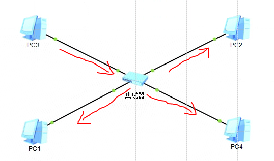
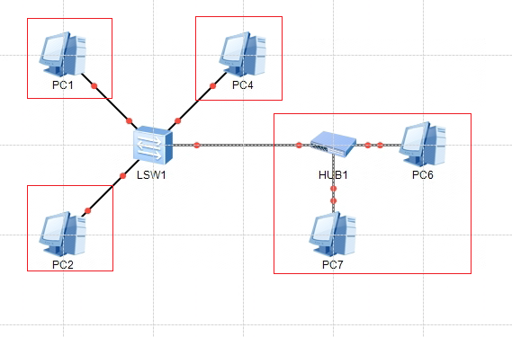
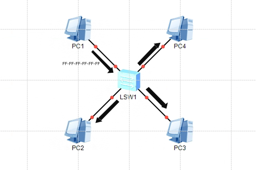
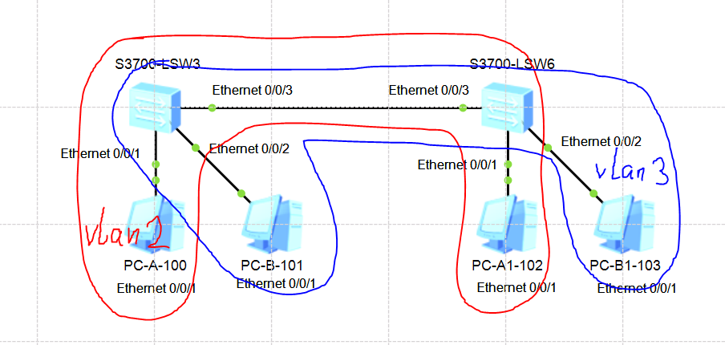

在介绍设备的过程中还会引入一些其他的网络概念,我觉得基于网络设备讲解才能更好的理解一些概念,所以混到一起。
计算机网络广播域 : 指网络中能接收任一设备发出的广播帧的所有设备的集合。
广播帧 : 在IP层面,广播帧通常是以IP地址为255.255.255.255为目的地址发送的。而在数据链路层,广播帧的mac地址为FF-FF-FF-FF-FF-FF这使得局域网内的所有网卡都能接收到这个帧。
计算机网络冲突域 : 指在一根传输线缆上进行两个或两个以上的数据流(bit流)传输时产生冲突,网络中所有共享传输介质的都叫做一个冲突域。
全双工通信中 : 数据可以在两个方向上同时传输,即发送和接收可以同时进行。 电话
半双工通信中 : 数据可以在两个方向上传输,但同一时刻只能有一个方向上的传输存在。 对讲机
单工通信 : 只允许数据在单一方向上传输。 电视、广播
单播 : 一对一的通信方式,即发送方将数据发送给指定的接收方。
组播 : 一对多的通信方式,发送方将数据发送给一组指定的接收方。
广播 :一对所有的通信方式,发送方发送的数据包会被网络中的每一台主机接收,无论它们是否需要这些数据。
lan : 局域网(Local Area Network)
wan : 广域网(Wide Area Network)
vlan: 虚拟局域网(Virtual Local Area Network) 【本地链接】vlan技术的讲解
路由就是根据一定的规则,确定数据包在网络中的传输路径,从而确保数据包能够准确地从源地址到达目的地址。
路由过程涉及两个基本活动 : 确定最佳路径和沿该路径传送数据包。前者称为路由选择(Routing Decision),后者称为数据转发(Data Forwarding)。
* 路由选择负责确定数据包从源到目的地的最佳路径,路由选择算法根据许多因素,如目的地址、链路的状态、可用带宽和延迟等来计算最佳路径。
* 数据转发则负责将数据包从源地址转发到目的地址,这通常涉及查找路由表以确定下一个转发目标,并将数据包发送到该目标。
网关不是指具体的东西,而是一个概念。两个不同的网络(指的是ip位与子网掩码的值不同)之间是不能进行TCP/IP通信的。
若要实现这两个网络之间的通信,则必须通过网关。
只要具备路由功能的网络设备或是主机设备,都可以作为网关使用。
hub是一层设备也就是物理层设备。也就是说hub不会解析收到的数据,仅仅是无脑发送。而且hub也不需要配置,插线就能用的。

如上图,PC3发送信息到hub上,hub会将消息发送到网络中PC1 PC2 PC4。可以把这个网络称为广播域。
如上图,hub是半双工通信模式,所以在同一时刻连接在hub上的设备只能有一个进行数据发送,这也就意味着在没有其他机制的辅助下,设备间的数据通信会出现冲突。可以把这个网络称为冲突域。
可见基于hub的网络即是冲突域也是广播域。
交换机比hub进步的地方在于,交换机具有MAC地址学习的能力,它会在接收数据的过程中解析数据帧形成MAC地址表。交换机会依据MAC地址表将单播数据发送到指定的设备,这样每一台主机都只会收到跟自己有关的数据,不会相互影响
现在对基于交换机的网络进行广播域和冲突域的分析
分析冲突域,交换机通过下面几个特性消除了本身存在冲突的可能。
所以交换机网络分隔了冲突域,交换机每一个端口连接的网络是一个冲突域。如下图,交换机每个端口连接的红框区域都是一个冲突域。
目前含有hub的那个区域会存在冲突,其他区域只有一台设备不会出现冲突,但依然叫冲突域。

接下来分析广播域,当一个设备向交换机发送一个广播帧数据时,交换机(无任何配置)会将数据发送给剩余设备,所以交换机网络也是一个广播域。如下图。

但是交换机可以通过vlan技术对广播域进行隔离,参考【本地链接】vlan技术的讲解,【本地链接】ensp划分vlan操作步骤,设置完毕后效果如下图。

二层交换机与三层交换机
顾名思义,二层交换机是工作在计算机网络的二层(数据链路层),三层交换机是工作在计算机网络的三层(网络层)。二层交换机只能识别MAC地址信息,而三层交换机不仅可以识别MAC地址还能识别IP地址。所以三层交换机在二层交换机的基础上进行了升级。
由于三层交换机具备了路由功能,使得三层交换机连接不同网络的设备可以进行数据通信,而二层交换机连接的设备只能工作在一个网络段中。
负责在不同网段转发数据,一般有广域网接口。